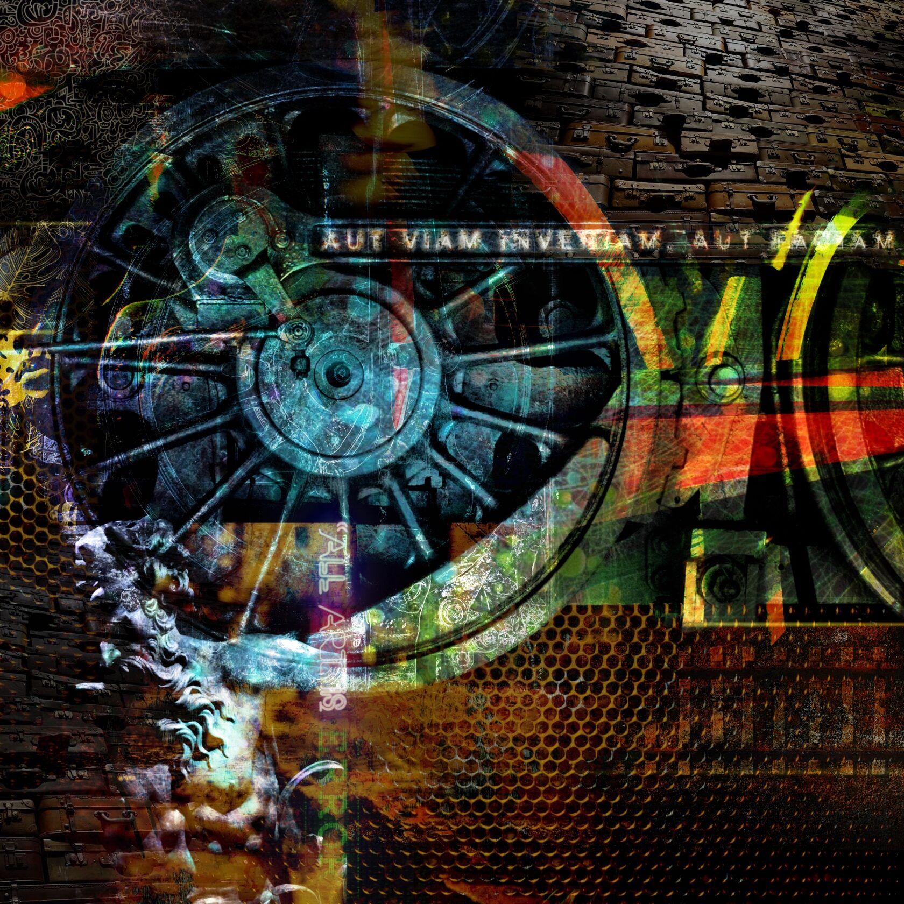

СЕРИЯ ОТПЕЧАТКИ
ТЕХНИКА: digital art. Произведения "печатаются" ограниченным авторским тиражом 30 шт, на широкоформатном алюминии с использованием технологии сублимационной печати. Каждый экземпляр имеет уникальный печатный номер и подпись автора.
ГОД: 2024.
РАЗМЕР:
30х30 см
70х70 см
100х100 см
Или найду дорогу, или... Или что? Ну какие варианты? Или умру? Или забью на этот вопрос и буду просто жить, отдаваясь волнам истории и событий? Или римский вариант - Aut Viam Inveniam Aut Faciam (Или я найду путь, или я создам его)?
Aut Viam Inveniam Aut Faciam - эту фразу приписывают то Цезарю, то Ганнибалу, то Цицерону. Впрочем, неважно. Так или иначе вопрос своего личного пути возникает у каждого человека и ответ на него тоже персонален. Можно двигаться по давно проложенным и хорошо освещенным, комфортным магистралям, можно искать интересные и неочевидные маршруты в сложном переплетении созданных человечеством дорог, можно идти по второстепенным направлениям, опасаясь яркого света центральных путей, можно упорно пробивать свою узкоколейку, не обращая внимание на динамику всей сети, можно сидеть на чемоданах, не двигаясь вообще никуда, можно выйти на станции и заняться ее обустройством, можно… да миллион вариантов. Так какой ответ правильный? Мне кажется, вся прелесть в том, что его нет. Вернее, любой ответ может стать «правильным», если его выбор будет соответствовать нашему глубинному «я»… которое скорее всего вовсе не «я», а «мы».
Хотя, эти красивые слова, в очередной раз ничего толком не объясняют и не уберегают от ошибок. Как обычно. Но, с другой стороны… а что плохого в ошибках? Так то, по большому счету, даже искусство - это в каком-то смысле всегда «ошибка», ведь в противном случае получается просто «алгоритм», который при всех своих достоинствах ни искусству, ни жизни не указ.